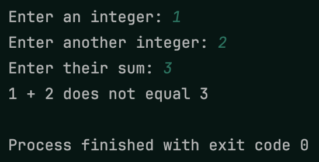
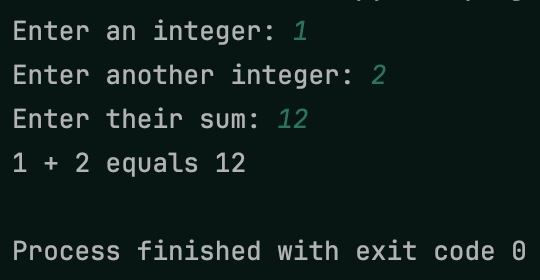
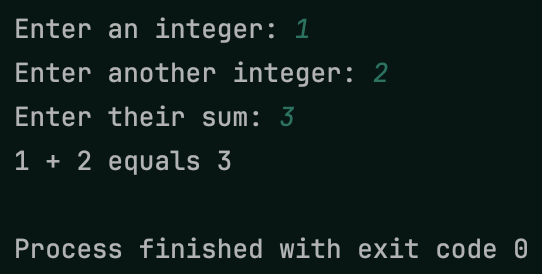
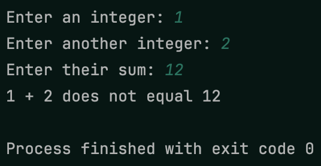

In this project, you’ll use type annotations to help you find the bug
in some code! You’ll start by creating a new project and copying the
code from starter.py into your main.py file.
Try running it and see what happens! Notice anything strange? The
following images show some interesting outputs.
 Weird output of starter code
 Weird output of starter code
Now add type annotations to the total function, then
configure mypy to run before your code. Fix the errors to
fix the bug so the code works as expected!
 Expected output 1
 Expected output 2